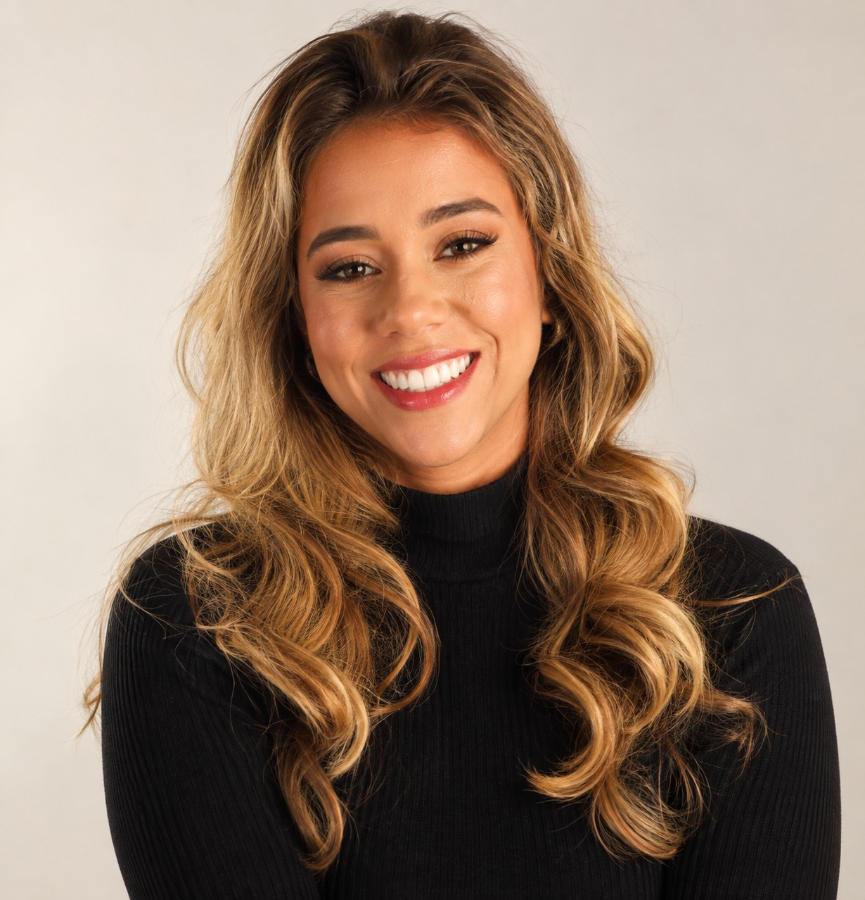
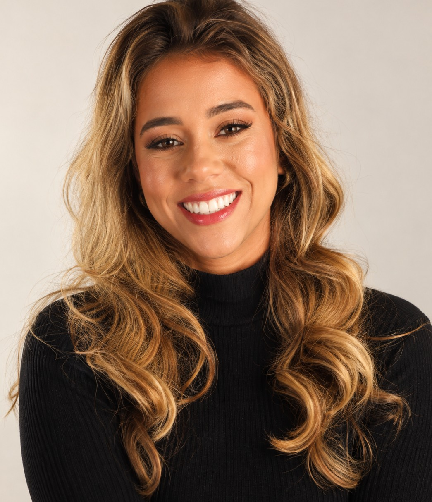

Nutrição esportiva
Organização nutricional para praticantes de atividade física e atletas, com foco em energia, recuperação, desempenho e composição corporal.
Nutrição baseada em ciência para melhorar performance, composição corporal e saúde — sem transformar alimentação em uma lista de proibições.

A estratégia muda conforme objetivo, rotina, treinos, preferências e contexto clínico. O plano precisa servir à sua vida — não o contrário.
Organização nutricional para praticantes de atividade física e atletas, com foco em energia, recuperação, desempenho e composição corporal.
Acompanhamento alimentar individualizado para saúde, rotina e construção de hábitos sustentáveis.
Estratégias para redução de gordura e preservação ou ganho de massa magra, sem atalhos ou promessas irreais.
Suplementos entram quando fazem sentido para o objetivo e o contexto — não como substitutos de alimentação e rotina bem estruturadas.
O acompanhamento parte de avaliação, contexto e metas possíveis. A ideia é construir um plano que você consiga aplicar, ajustar e sustentar.
Entendimento da rotina, objetivo, treinos, histórico e dificuldades.
Definição de prioridades e plano individualizado.
Orientações práticas para transformar teoria em rotina.
Evolução do plano conforme resposta, aderência e mudanças de objetivo.

Rafaella Martins é nutricionista formada pela UERJ e atua nas áreas clínica e esportiva. Sua trajetória inclui experiência no futebol, com passagem pelo Botafogo, além da atuação atual indicada em seu perfil profissional junto ao futebol feminino do Fluminense.
A abordagem comunica uma nutrição baseada em ciência, individualização e educação alimentar, evitando soluções simplistas e protocolos desconectados da realidade de cada pessoa.
Experiência prévia no Botafogo e atuação profissional ligada ao ambiente esportivo reforçam um olhar prático para rotina de treino, recuperação e desempenho.
Atuação descrita publicamente em categorias de base e futebol feminino, com contato com diferentes níveis de exigência esportiva.
Perfil profissional público informa pós-graduação em Nutrição Esportiva pela NUTMED, reforçando atualização técnica na área.
Consultório na Freguesia, em Jacarepaguá, com atendimento particular.
Não transformar um alimento isolado em vilão ou solução.
Planejar os “extras” com antecedência em vez de depender de culpa e compensação.
Ajustar estratégia ao contexto — treino, sono, rotina, objetivos e fase da vida.
Usar suplementação como ferramenta, quando necessária, e não como atalho.
Não. Rafaella comunica atuação em nutrição esportiva e clínica, atendendo também pessoas fisicamente ativas e objetivos de saúde e composição corporal.
Estrada dos Três Rios, 1173, Edifício Global Office, Freguesia (Jacarepaguá), Rio de Janeiro - RJ.
O perfil público da Doctoralia informa atendimento particular. Confirme condições e disponibilidade diretamente no canal de agendamento.
O Instagram direciona para o Linktree profissional. Use o botão de agendamento para acessar os canais atualizados.
Conheça o acompanhamento nutricional e veja qual estratégia faz sentido para o seu momento.